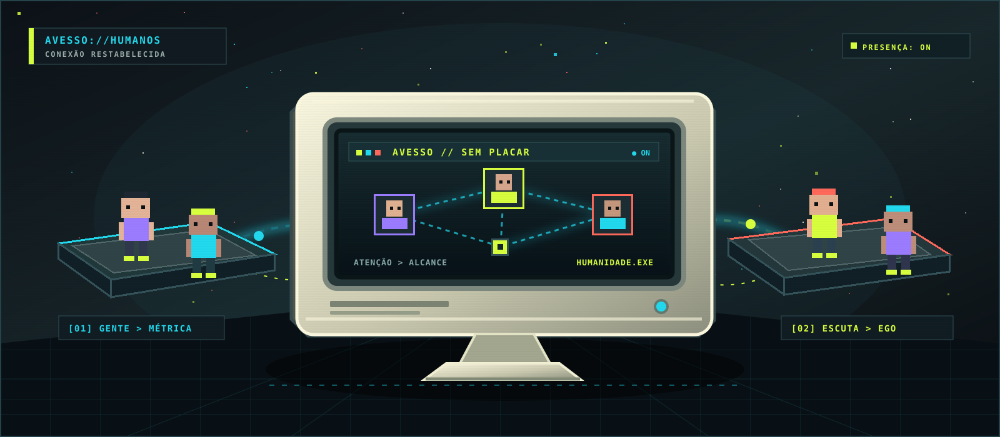

Escolha alguém
Uma publicação começa com uma pessoa, não com seu próprio umbigo em 4K.
Uma rede social onde você não publica sobre si mesmo, não coleciona seguidores e não ganha medalha por ter opinião em horário comercial.

O AVESSO nasceu porque a internet virou um shopping center de egos com luz branca demais. Aqui, toda publicação precisa ser para alguém. Quem recebeu menos atenção sobe; quem já virou o centro da festa pode esperar um pouco.
Não prometemos salvar a humanidade. Ela nem leu os termos de uso. Só construímos um lugar em que presença é mais valiosa que performance.
O AVESSO removeu seguidores, ranking público e contagem de curtidas.
“Mas como vou saber se sou importante?”
Uma publicação começa com uma pessoa, não com seu próprio umbigo em 4K.
Reconhecimento, pergunta, ajuda ou companhia. Publicidade disfarçada vai para o limbo.
Sem número público. Sem dopamina industrial. A resposta é a recompensa. Meio chocante, sabemos.